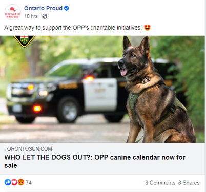
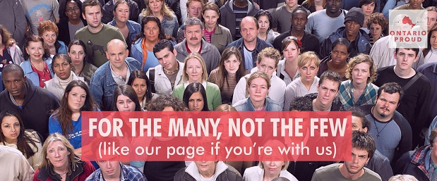
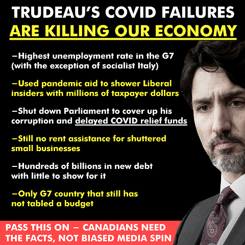
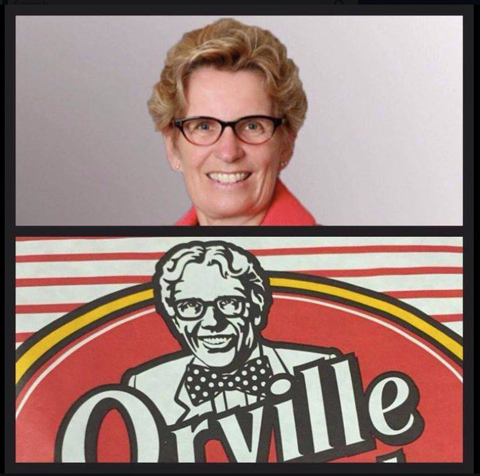

What is Ontario Proud?
November 14th, 2020
National Post:
TDC_ARTICLE_START
OTTAWA — Erin O’Toole has signalled he will make aggressive digital messaging a feature of his bid for the Conservative leadership with the appointment of Jeff Ballingall, founder of Ontario Proud and other influential Facebook pages, to oversee his digital strategy.
Ballingall has made a name for himself over the past few years in pioneering the use of Facebook to spread conservative messaging, often through viral posts that don’t require any ad spending. The Ontario Proud page remains his best known effort, with nearly half a million followers, but he also runs Canada Proud (192,000 followers) and B.C. Proud (82,000 followers). In addition Ballingall co-owns The Post Millennial, another conservative website that’s gained a strong online following.
TDC_ARTICLE_STOP
Jeff Ballingall
This sounded quite interesting to me. I decided to go and check out this "Ontario Proud," facebook page.

It turns out to be largely what you would expect.

Idiotic "back the blue-antifa," coupled with the glossy, shiny photos of astro-turfed multi-racial Donor-Rightism. And let's not forget a Finkelthink classic, overly focusing on the personalities of Donor-Side Puppet, as opposed to the policies. The below picture at least contains some policy, but for the most part it's just low tier making fun of Joffrey Trudeau. And not in a spicy way, in the sort of not-really-funny way of Marco Rubio.
Oh gawd no. Not SOCIALIST Italy.
See how they sandwhich legitimate greivances, delaying COVID relief funds, financial parasitism, no rent assistance, with assinine Donor-Rightisms like "SOCIALISM" and "muh budget". Do you notice how it doesn't even make any fucking sense? Like, this guy is asking for extra government funds (which is good), but then he simultaneously complains about "muh SOCIALISM".
Although in fairness I did find this one genuinely great meme.
The caption is: Worst part about shopping is seeing Kathleen Wynne's Face
Getting back to this being classic Donor-Right, I don't really need to follow up on that instinct, since the content of the page, coupled with the sheer fact that they are not banned from Facebook, tells us everything we need to know. This is designed to win elections and do nothing for the people, and Ontario Proud basically comes out and says this, by just outright saying that he's focused on removing Liberal seats.
The page has been going since 2017, and they don't seem to have really affected elections positively for the Donor-Rights. However, considering how hated the Donor-Right party is here in Canada, I'm not sure how much I can really put into them losing progressively more seats.
Back to the article:
TDC_ARTICLE_START
There have been efforts by various other political groups to match Ontario Proud’s reach on Facebook, but nobody has come close. During the 2018 Ontario election Ballingall also drew in big-money donations through Ontario Proud to run television ads and send out mass texts to cell phones. In the aftermath, Liberal campaign manager David Herle told a Ryerson University forum that Ontario Proud “delegitimized Kathleen Wynne. And we didn’t know how to fight it.”
Ballingall was also part of the public effort to oust Andrew Scheer as leader after the 2019 election, creating a group called “Conservative Victory” with fellow Conservatives Kory Teneycke and John Reynolds. “When a political leader fails, they resign,” the group’s website said.
TDC_ARTICLE_STOP
I don't need to continue, this is pretty clear and obvious. Heavily connected marketer joins Donor-Puppet candidacy. But it's worth mentioning that this was written before O'Toole had won the candidacy.
Anyway, I just thought it was somewhat interesting to see the little tiny political machinations inside the Donor-Right scene, and how utterly fake and astroturfed it all is. The purpose of which is to channel righteous hatred of Joffrey Trudeau, and turn it into "Joffrey is bad because he dressed up like a brown person 20 years ago," which was another meme I saw on that page.